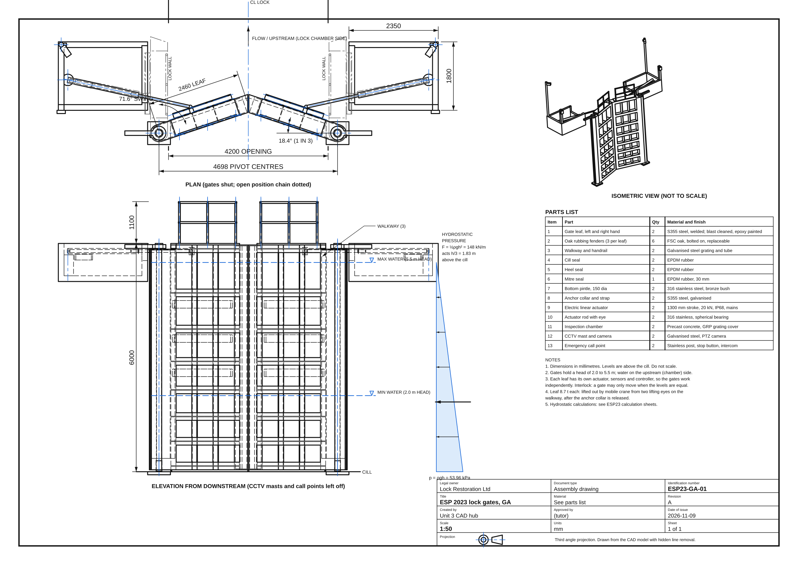
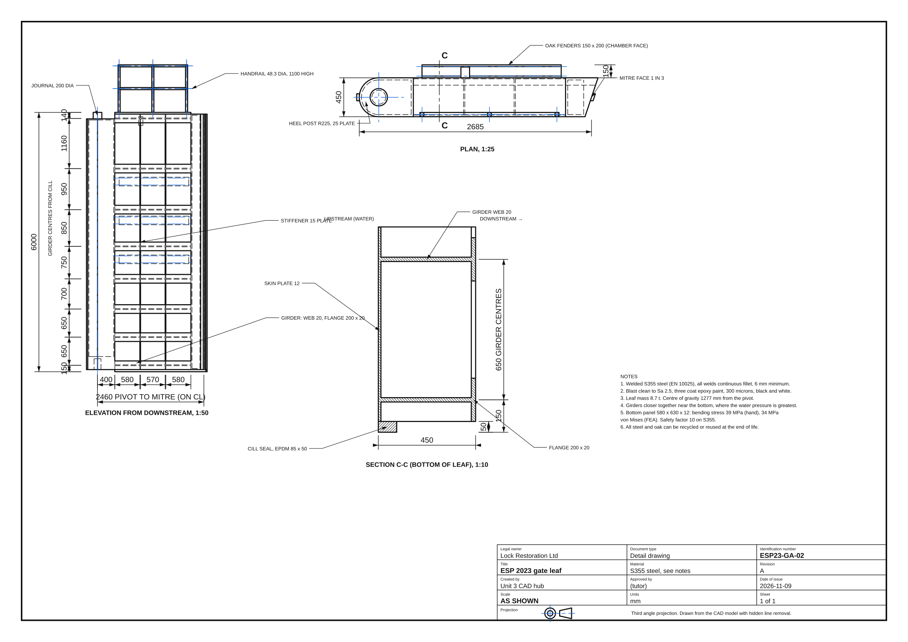
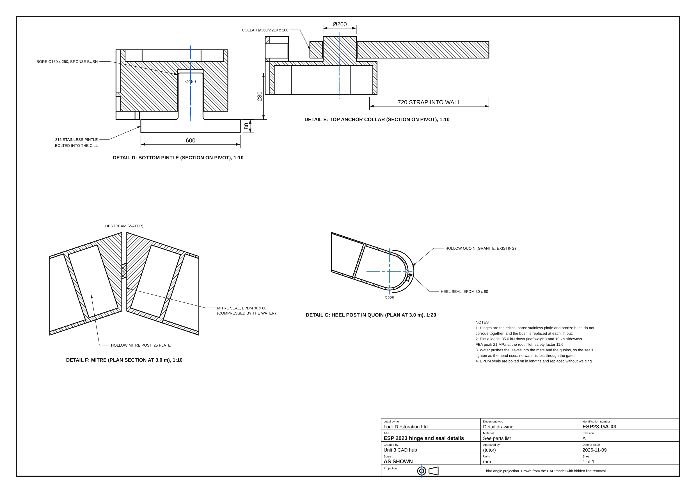

Task 2 submission set
Part A (two design ideas, annotated with the hydrostatic pressure calculation): sheet ESP23-GA-04. Part B (the preferred design, fully dimensioned and to scale): sheets ESP23-GA-01 to 03. Supporting calculations (two A4 sides) and design notes (about 500 words) are the two PDFs below.
Drawings (A3)









The hub's standard sheets (third angle, first angle and section A-A, overall sizes only) are in the drawings folder too, named after each model.
Simulation: the gates opening
Inventor Dynamic Simulation
Each leaf turns 71.6 degrees on its own actuator, one after the other. Real time about 60 s each way; shown 10 times faster.
The gates, all round
Leaves, hinges, seals, actuators, inspection chambers, CCTV masts and call points.
Models
| Model | What it shows | Open | Files |
|---|---|---|---|
| Lock gates (GA) | The preferred design, 25 parts, shut. Simulation of the gates opening; FEA of the bottom pintle. | 3D · Build steps · Simulation · FEA | STEP · STL |
| Gate leaf | One welded leaf with its fenders, walkway and seals. 16 Inventor build steps. | 3D · Build steps | STEP · STL |
| Skin plate panel | The most loaded panel, for the FEA with the true hydrostatic pressure. | 3D · FEA | STEP |
| Concept B: lift gate | The second design idea, for comparison. | 3D · Build steps | STEP |
Key results
| Check | Hand calculation | FEA | Safety factor |
|---|---|---|---|
| Pressure at the cill, 5.5 m head | ρgh = 53.96 kPa | ||
| Force on one leaf | ½ρgh² x 2.46 m = 365 kN | ||
| Skin plate panel 580 x 630 x 12 | 34.8 MPa von Mises, 0.25 mm | 34.1 MPa, 0.25 mm | 10.4 |
| Bottom girder (simply supported) | 4.2 MPa | 84 | |
| Bottom pintle (85.6 kN down, 19 kN sideways) | 13 MPa plain pin, about 21 MPa at the fillet | 21.5 MPa | 11.6 |
| Actuator force | 12 kN needed, 20 kN fitted | 1.7 |
How it was made
Every model is parametric CadQuery Python in models/esp2023.py in the repository: change a number (the opening, the height, the head of water, the girder levels) and rebuild. The Inventor build steps are in models/esp2023_steps.py, the dimensioned sheets in tools/esp2023_drawings.py and the calculations in tools/esp2023_calcs.py. Build steps and the simulation are written as the Autodesk Inventor commands a learner would use; the stage models are CadQuery, not Inventor files.